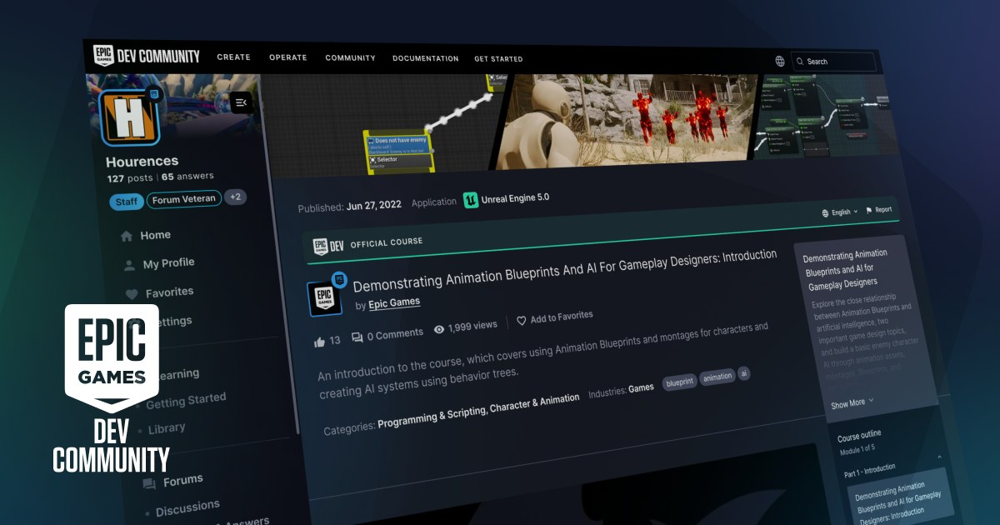

01
Unreal Engine 5.8.2 Hotfix：Production 鎖版前先做 regression pass
UE 5.8.2 已於 8/25 上線，對 5.8 專案的價值集中在穩定性與 regression 修正。

Quick Impact｜已在 5.8 的團隊應先用代表性關卡與角色做 smoke test。
完整分析
Production 判斷
Unreal Engine 5.8.2 在 8/25 正式釋出，對已進入 5.8 的專案來說，比追逐新功能更重要的是 regression 與穩定性修補；5.8 又是 UE5 路線圖中最後一個預定 major release，因此 hotfix 品質直接影響後續 production 鎖版。
導入方式
不要直接覆蓋團隊主分支；先複製目前 5.8 專案，跑 shader compile、Nanite/Lumen、角色動畫、cook/package 與主要平台 smoke test，再決定升級。
限制
官方公告確認 hotfix 已上線，但每個專案使用的 plugin 與自訂 engine patch 不同，仍需自己的 regression matrix。
20 分鐘實測
開一個代表性關卡與角色，對照 5.8.1/5.8.2 的 editor log、viewport、PIE 與 packaged build，先抓最可能阻塞美術的差異。